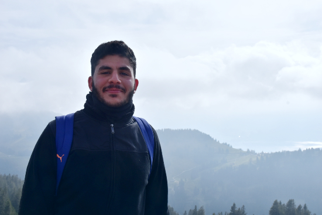

<div class="header">
	<div class="profile-pic">
		
		<span>Mount Rigi, Switzerland</span>
	</div>
	
	<div class="title" id="intro">
		<h1>Taha Tobaili</h1>
		<p>NLP Engineer <br>
		London, UK</p>
		<div class="clear10"></div>
		<a href="mailto:taha.tobaili@outlook.com" class="email">taha.tobaili@outlook.com</a></p>
	</div>

	<div class="social">
		<a href="https://www.linkedin.com/in/tahatobaili/" target="_blank" class="fa fa-linkedin"></a>
		<a href="https://twitter.com/TahaTobaili" target="_blank" class="fa fa-twitter"></a>
		<a href="https://www.facebook.com/taha.tobaili" target="_blank" class="fa fa-facebook"></a>
	</div>
</div>

<div class="clear30"></div>

<div class="content">
	<!--
	<div class="item">
		<h2>Welcome to my homepage!</h2>
		<span style="font-style: italic">Herzlich Willkommen, Bienvenido, Hoşgeldiniz, أهلاً وسهلاً
		</span>
		<p>
		Solving linguistic complexities to develop Natural Language Understanding (NLU) machines always sparked my interest, specifically in dealing with
		lower-resourced languages or multi-lingual contexts. This stems from my passion in languages and affective computing, the discipline
		of teaching machines to understand and react to human emotion. <br><br>
		
		I did my PhD in Natural Language Processing (NLP) at the <a href="http://kmi.open.ac.uk/" target="_blank">Knowledge Media Institute</a>,
		the Open University, Milton Keynes campus in UK, and completed it in November 2020. Since then I have been helping my friends build an EdTech
		(Education Technology) for an early-stage startup in London. <br><br>
		
		P.S: Something so exciting is coming up... &#128527;
		</p>
	</div>
	<div class="item" id="research">
		<h2>Sentiment Analysis for Low-Resourced Languages on Social Media</h2>
		<span style="font-style: italic">PhD Thesis</span>
		<p>
		In 2016 I crossed the Mediterranean from the Middle East to spend four years in the UK and one
		in Germany researching and analysing the complex multilingual social media text. Lebanon, my home country, is one of the very few in the
		entire region where people constantly switch among English or French as they speak their dialectal Arabic, a dialect that is heavily
		influenced by French and Turkish. The modern generation started to reflect their natural multilingualism in social text by Latinising
		the dialectal Arabic without the need to switch between different scriptures.  <br><br>
		
		As it is extremely low-resourced and overlooked in the literature of NLP, Latinised Arabic or Arabizi
		made a perfect case for my PhD study. Let alone being low in NLP resources and code-switched with English and French, it is rich in morphology,
		and distinctively lacks a standard orthography. It is a genuine linguistic mess that defies the fundamental techniques of sentiment analysis, the
		task of classifying subjective text as positive, negative, or neutral. <br><br>
		
		With no availble NLP tools to utilise for Arabizi, I addressed a plethora of challenges the hard way, ingesting, preprocessing, and creating
		various datasets for sentiment analysis. I applied machine learning for language identification, then used deep learning to populate morphologically
		and orthographically rich sentiment lexicons for unsupervised sentiment classification of social media data. <br><br>
		
		Read more about the challenges and the approach <a href="https://towardsdatascience.com/sentiment-analysis-for-low-resourced-languages-on-social-media-128bf01f2547"
		target="_blank">here</a>.<br>
		Visit the <a href="https://tahatobaili.github.io/project-rbz/" target="_blank">project's page</a> for updates and published resources.
		</p>
		
	</div>
	<div class="item" id="experience">
		<h2>Industry Experience</h2>
		<div class="clear10"></div>
		<span><a href="https://adarga.ai/" target="_blank">Adarga AI</a>, London </span>
		<p>Recently I worked as an NLP Engineer to design the social media analysis pipeline from research to production. I developed a large-scale data
		ingestion library that retrieves Twitter data based on specific metrics such as date, location, and or topics of interest. 
		I focused my research on retrieving information from the social network structure such as community detection and influencer identification.
		</p>
		<div class="clear30"></div>
		<span><a href="https://www.ibm.com/de-de/about" target="_blank">IBM Watson</a>, Böblingen </span>
		<p>Previously I did an internship at IBM Watson Analytics for Social Media in Germany. One of Watson’s main strengths is mining and analysing
		large datasets from the internet in different languages, I was responsible for the NLP of the Arabic language. I developed a deep morphological processor
		that extracts gender, number, case, tense, and the base forms from richly inflected words. 
		</p>
		
	</div>
	<div class="item" id="about">
		<h2>More About Me</h2>
		<p>I am an optimistic being, inquisitve by nature, and constantly challenging the mainstream. I tend to find my self learning something new, especially languages
		as it compliments my studies. Fond of travel and adventure, I have been to many places and got lost in most of them! My energy is highly driven by sports, I have
		trained and competed professionaly in Swimming, Table Tennis, Chess, and Brasilian Jiu Jitsu but now keeping a fair balance with education. <br><br>
		
		Want to collaborate on Low Resourced, Multilingual, or Arabic NLP? <a href="#intro">Get in Touch!</a>
		</p>
	</div>-->
</div>
</div>
